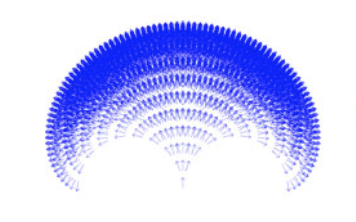

Numerical Approach to Reachability-Guided Sampling-Based Motion Planning Under Differential Constraints
S. D. Pendleton, W. Liu, H. Andersen, Y. H. Eng, E. Frazzoli, D. Rus, and M. H. Ang, Jr. (2017). Numerical Approach to Reachability-Guided Sampling-Based Motion Planning Under Differential Constraints. IEEE Robotics and Automation Letters, Vol. 2, No. 3.What problem does the paper solve and why is this interesting?
Pendleton et al. address the issue of motion planning in robots, they introduce an approach to accelerating RRT* (optimal raplidly-exploring random tree) pathfinding by providing a sampled reachable state map which augments the speed gains garnered from the use of nearest neighbor (NN) and reachability guidance (RG).How do they solve this problem?
From the initial condition, Pendleton et al. construct a tree by sampling valid control actions from each state to generate children. The tree is least dense near to the initial condition and becomes extremely dense as the timestep grows. It is questionable whether the level of density at such high levels is actually useful –it is certainly contributing to the memory issue that they experience– with many states overlapping with their neighbors.Pendleton et al. use variable sized hyperrectangles with verticies at sampled points to generalize their discrete reachability tree to continuous state space. The hyperrectangles are grown to include as many similar states as possible. This method of approximation leads to false positive values on the edges of reachable space due to the jagged edges, but allows for effective simplification of the sampled space by grouping many similar points and only requiring the hyperrectangle and its boolean reachable/non-reachable state to be stored.
How did they test their solution?
The solution is implemented on an autonomous golf cart and is extended to account for constant velocity obstacles. The efficacy of the sampling method is judged based on the density of the tree. Although density may becorrelated with effictive exploration of the state space, they are not one in the same. The tree very quickly moves from very sparse to extremely dense, with many nodes overlapping. This level of density is not beneficial except perhaps on the border of reachability and therefore evaluating efficacy is necessarily useful.The method of compression using a variable sized hyperrectangle grid loses information about the path to that cell, but works very well for compressing the large amounts of data generated. In the golf cart, it is ok to lose this data becuase only kinematics are taken into account. 
Future work and questions
The sampling method introduced in this work leads to large amounts of overlap and redundancy. The states are later grouped, which lessens the memory load, but the sampling is highly non-uniform, leading to highly over and undersampled areas.How could a relatively discrete graph of state space be used to control a robot without discretizing the states that it can get to?
Is there an alternative method to using hyperrectangles that could provide a better approximation of the edge of reachable space?
September 27, 2017
Sam Ingersoll